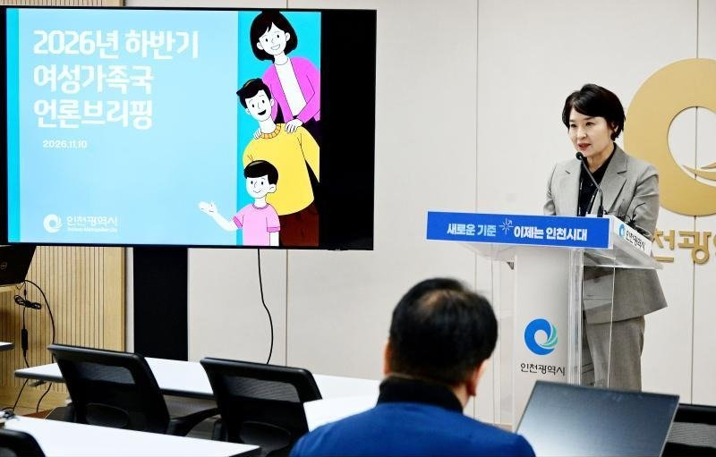

인천시, 2027년 혼인신고 부부에 100만원…예산안에 129억원
연령·소득 무관 생애 한 번, 부부 각 50만원…7월 시행 목표
AI경제저널=김갑봉 기자 | 인천시가 2027년부터 혼인신고를 한 부부에게 혼인지원금 100만원을 준다. 연령과 소득을 따지지 않고 생애 한 번 지원한다. 시는 10일 이 사업을 밝혔고, 5일 시의회에 낸 2027년 예산안에 129억원을 잡았다.

2027년 1월 1일 이후 혼인신고 부부
대상은 2027년 1월 1일 이후 혼인신고를 한 부부다. 혼인당사자 두 사람에게 50만원씩 따로 준다. 지원금은 혼인신고일로부터 1년 안에 신청하면 된다.
시는 신청자의 자격을 확인한 뒤 본인 명의 계좌로 넣는 방식으로 운영할 예정이다. 시행 목표 시점은 2027년 7월이다.
세부 지원기준과 신청 절차는 아직 정하지 않았다. 시는 정부 사업지침과 재원분담 구조 등을 반영해 구체화할 계획이라고 밝혔다.
김경선 시 여성가족국장은 "혼인지원금은 결혼을 준비하거나 새롭게 출발하는 부부의 초기 경제적 부담을 덜어주는 데 의미가 있다"고 말했다.
혼인지원금 129억원이 인천에 말하는 것
첫째, 예산이 가리키는 규모다. 시는 2025년 혼인건수 통계 등을 바탕으로 사업 규모와 소요예산을 산정한다고 밝혔다. 예산안 129억원을 부부당 100만원으로 나누면 1만2900쌍이다(AI경제저널 계산).
2025년 인천 혼인건수 1만3991건에 100만원을 곱하면 139억9100만원이다. 예산안은 이보다 10억9100만원 적다(AI경제저널 계산). 시는 129억원의 산정 근거를 자료에 밝히지 않았다.
둘째, 인천의 혼인은 늘었지만 증가 폭은 전체보다 작다. 국가데이터처에 따르면 2025년 인천 혼인건수는 1만3991건으로 전년보다 5.8% 늘었다. 같은 해 전체 혼인건수는 24만326건으로 8.1% 늘었다.
인구 1000명당 혼인건수인 조혼인율은 인천이 4.6건으로 전체 4.7건보다 낮다. 시도 가운데서는 대전 6.1건, 서울 5.3건 순으로 높다.
셋째, 출생·양육 예산 속 자리다. 시 예산안의 출생·양육 분야에는 천사지원금 469억원, 아이맞이지원금 354억원, 아동기본수당 148억원이 있다. 혼인지원금 129억원은 그다음이다. 시는 혼인지원금을 출생·양육 분야에 넣었다.
넷째, 소득을 따지지 않는다. 2027년 1월 1일 이후 혼인신고를 한 부부라면 연령과 소득에 관계없이 같은 금액을 받는다. 돈은 부부 공동이 아니라 두 사람 각자의 본인 명의 계좌로 들어간다.
참고문헌
- 인천광역시 인구전략기획과(2026). 인천시, 2027년부터 혼인신고 부부에 혼인지원금 지급(보도자료). 2026년 11월 10일. https://www.incheon.go.kr/IC010205/view?repSeq=DOM_0000000015939241
- 인천광역시 예산담당관(2026). 인천시, 2027년 예산안 15조 9000억원 편성, 민생 지키고 인천 제값 찾는다(보도자료). 2026년 11월 5일. https://www.incheon.go.kr/IC010205/view?repSeq=DOM_0000000015900573
- 국가데이터처 사회통계국 인구동향과(2026). 2025년 혼인·이혼 통계(보도자료, 2026년 3월 19일) [표 12] 시도별 혼인건수 및 조혼인율. KDI 경제교육·정보센터 게재본 https://eiec.kdi.re.kr/policy/materialView.do?num=278151
- e-나라지표. 총 혼인건수 및 조혼인율. https://www.index.go.kr/unify/idx-info.do?idxCd=1580
[사진 출처]
- [사진1] 인천시 인천인터넷방송 포토시정 「여성가족국 기자브리핑」(2026.11.10) https://www.incheon.go.kr/intv/TV010201/3094308
관련기사
- [인천경제&경제사③] 관세는 빚 담보로, 쌀은 인천 부두로… 개항기 인천의 두 길
- 인천 전셋값 올해 4.71% 상승, 집값의 여섯 배
- [인천경제&경제사②] 1883년 인천 개항장, 관세권은 일부 회복, 조계 땅은 「영구히」 조차
저작권자 © AI경제저널 무단전재 및 재배포, AI학습 및 활용 금지